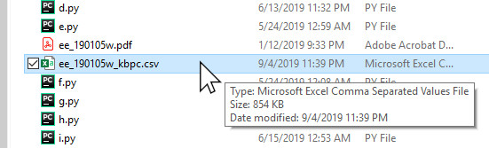

Using the PDF Converter
Employee Everything Reports can be generated in three types of formats: csv, html or pdf. Many of Klusterbox's automated features run off of one particular file type called a csv. These file types can be identified by a .csv or sometimes an .xls extension on the end of the file. It is not always easy for stewards to get this particular type of file, but it is easy for many stewards to get a pdf file. So klusterbox has the functionality to convert a pdf file into a csv file.
The PDF Converter
To find the PDF Converter, go to the Automated drop down menu and select PDF Converter.
A file dialog box will appear. Using this file dialog, browse and find the pdf file you want to convert. Only pdf files will and folders will be visible in this file dialog. This might sound obvious but keep in mind that this file has to be an employee everything report in order for the converter to work. If you don't select an employee everything report, you will get an error towards the end of the process. Once you have selected a pdf file, double click on the file or select it and press "open". Note: this conversion process will not destroy the orginal file. It will generate a new file based the the file you select.
A messagebox will appear asking you if you want to proceed. Press Ok.
A progress bar will appear warning you that the process will take several minutes. So go get a cup of coffee or something while you wait.
Once the process is completed, you will get a messagebox informing you the name of the file. The file name is always the same as the file it was created from except "_kbpc" has been added to the end and the file extension is now csv. The file can be found in the same folder as the pdf file it was generated from.
If you look for the file in explorer, you will see it below the original file. Note the modified name and the csv file extension. You are now ready to run your new csv file in the Automatated Data Entry feature or the Automatic Over Max Finder.
